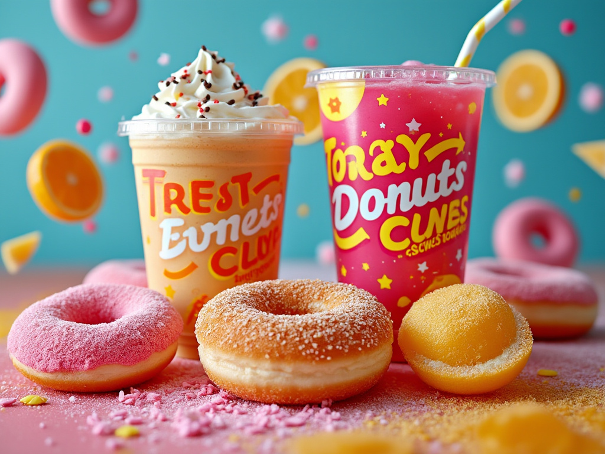

AI Outputs as Junk Food
Introduction
My first taste of American food was a bacon-and-egg roll in the airport. Immediate impression: “woah this is sweet?!?”. The bread was sweet, the bacon maple-coated… Tasty, but odd after 5 years eating fairly healthy and basic food in Zimbabwe. Why is everything full of corn syrup? Why have I gained weight? Part of the answer is ‘optimization’ - when you optimize for sales, you can end up hacking the human brain in ways that aren’t good for us. Sweeter chocolate milk sells better, so more sugar is added until you get the thick sludge that people drink here. Cheap and tasty are all well and good, but it’s clear there are downsides, and it’s clear you mightant to spend considerable effort fighting the tempation and seeking out healthier alternatives. Short-term optimization for human preferences can lead to long-term harm. Anyway, on an unrelated note, let’s talk about AI!
What Makes A Tasty Model?
Today’s LLMs go through a few different phases of training. There’s ‘pretraining’, where the model is shown a lot of text and learns to predict the next word. Then there’s ‘fine-tuning’, where the model is shown a few examples of a specific task (like being a helpful assistant) and learns to predict the next word in that context. Finally, there’s ‘RLHF’ (or more generally ‘preference tuning’) where the model is trained with feedback about which outputs human raters (or a proxy model for human preferences) prefer. This is a bit like the difference between a slot machine, iterative refinement, and co-creation.
At a meta level, the choices influencing how exactly these stages are condicted, and how successful they are considered to be, is based on benchmarks (aka ’evals) that try to measure how well the model is doing. Some involve asking hard questions, which rewards informative pretraining data and careful instruction following. But more and more rely on human ratings to measure the model responses. For example, LMSys pits models head-to-head and has humans pick their preferred answer. All the model makers pay attention to performance on these comparisons, testing variants of their models before release and tuning them based on past votes.
What is the result? We’re optimizing models to make the human raters happy. On the surface it seems like a fantastic thing - better answers (measured by rater preference) mean a better, more helpful, more useful model. Right?
Except remember the food thing. You can score well on these human-preference-based evals with a few tricks:
- Long answers. People love to see lots of informative and authoratative-sounding text.
- Lots of code. Look, it wrote a whole app for me.
- Nicely formatted markdown. Headings, bullet points, bold text. Dopamine central!
- Sycophancy. “What an insightful question!”, “That’s quite an insight, would you like to delve deeper into this fascinating topic”. Seriously - look back at your interactions with your favourite AI and think why you like talking to it - is it just flattering you? (“Nooooo Claude is my friend…”)
I’m not saying all of these are bad. But think for a sec - are any of these a little like high-fructose corn syrup? Do you really want your apps full of verbose, pleasing-looking walls of code? Your essays the most appeal-to-the-masses slop? Your images the highly-saturated instagram-dominating preference-optimizing eye-candy?
Healthy AI-ing
Watching a coding agent write thousands of lines of code to make you a flashy dashboard will give you a hit of satisfaction - look at it go, just think what my sales will be like with this! But I’m starting to think this won’t make you a better programmer in the long term. Spending the time to learn, doing things carefully yourself, making things yourself rather than having them made - these are the cooking-at-home equiavalents that will pay future dividends. Use AI - the same way we can use fancy ingredients and equipment in a home kitchen. Just don’t give up your life to fast-food or let your intelligence atrophy from lack of use. Avoid the floaty-chairs of Wall-E! Embrace co-creation and make something that’s truly yours, not just the most appealing to the masses.
WIP: Or something. This feels important, but I’m still working on how best to express this. Input welcome!
